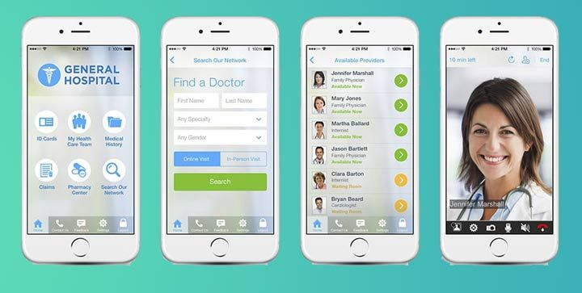

What Are the Advanced Services Offered by Telemedicine Software?

It is said that necessity is the mother of invention!Telemedicine might have sounded like a concept straight out of science fiction, not because it was not possible but more because there was no necessity.Today, however, thanks (but no thanks!)to the COVID-19 onslaught, telemedicine has become not only a necessity but also the default state of reality.
There have been instances even in countries like India where there is quite a discrepancy between the technologically exposed and the other end.Tech-savvy doctors have made themselves available to their patients.
The different manifestations of telemedicine
Telemedicine is a blanket term for representing a wide variety of services that can be made available to users without their physical presence in a medical facility.The services include but are not limited to:
Online consultation
More often than not, doctors are well-versed in diagnosing an ailment with just a few pointers.All it takes is a conversation where the patient can tell their problems and symptoms, and the doctor is more likely to arrive at an accurate diagnosis.In addition, if there is a need for statistically vital information like the pulse rate and the temperature, it can be made available through smart wearable devices.This makes the entire process of diagnosis and prescription of medicines easy and efficient.
As a garnish to this feature, some telemedicine applications make even video call consulting possible.The growth of internet speeds and penetration has contributed to the growth of video consultations.These video consultations give a more personal feel to the entire encounter.
Appointment booking
How often have you visited a doctor only to find that you will have to wait for at least an hour before your turn?This might not be needed if you were to fix an appointment with your doctor at a certain time period; you can also do so at a time of mutual convenience.This will ensure that the doctor is efficient in managing their calendar, and the patients do not have to wait for an unreasonably long stretch of time.
Ordering medicines online
There are instances when you would want to buy some medicines prescribed, but it might not be available in your local pharmacy.Also, the restrictions in traveling out of homes mean that you cannot venture out far and wide to get your medicine.If the consultation can be finished online, going out to buy medicines defeats the entire purpose and completeness of convenience.Telemedicine applications can be used to order medicines online either on a website or by using their mobile app.Medicines can be delivered at your doorstep.Since the telemedicine app is directly linked to the prescription, you do not have to worry about the hassle of validating your need for prescription drugs.
Its relevance right now!
As we have discussed earlier, telemedicine is not a mere extension of medical services in today’s context.It forms a rather important wing of medical services today.When hospitals are crowded with COVID-19 patients, and the medical facilities become some of the most vulnerable places, telemedicine with mobile apps is surely a life-saver, literally!
In addition, it also helps doctors still in touch with chronic medical disorders that need constant attention.Like diabetes.People with comorbidities have been designated as among the most susceptible to the COVID-19 infection.At this juncture, keeping those people in isolation and away from the crowd is crucial.Telemedicine applications make this possible by making medical consultations available for everyone at any time and any place.
The near future
It might not be an exaggeration to say that telemedicine is in its most nascent stages right now.For any new technology to take its strides into the future, it needs to be rich in terms of data.Until recent times, telemedicine apps’ use was primarily confined to a handful of people who thought they should embrace new technology rather than looking at the conveniences it offered.
However, the changing landscape of medical services consumption is all set to alter the patterns.In March 2020, the Indian Government passed its legislation regulating telemedicine.The intervention of artificial intelligence and machine learning into telemedicine is expected to yield positive and favorable results.The volume of data is of crucial importance in determining the usefulness of telemedicine applications in the near future.
Diagnosis can be carried out by chat box, and it can be passed to healthcare professionals in the event of a need for human intervention.In addition, it can also create a new stream of jobs where humans can handle the initial conversations before they pass it on to a doctor.
The best part of telemedicine is that unlike medical facilities and clinics, telemedicine and its utility are easily scalable.This will also help in better utilization of medical resources and in making them more available for people who need them the most… Like geriatrics and people affected with serious diseases.It also provides a platform of visibility for doctors who might have been lost in obscurity because they do not have a prominent offline presence.
Ensuring data privacy
Medical data can be considered one of the most prized resources and the most sensitive data.It has been protected by multiple legislations in almost every country on the planet, including the famous HIPAA in the United States.Therefore, meticulous care has to be taken to ensure the privacy and protection of data at all costs.
From a user perspective, it should be recommended that they use a two-factor authentication every time they log into the app.In addition, the app can also incorporate biometric login, so the chances of compromise are drastically reduced.
From the app-building perspective, additional layers of security and data encryption can also help in ensuring data protection.The data storage should be confined to top-notch servers like Amazon and Google.It is to be remembered that all it takes is a single data leak to damage the reputation of telemedicine applications.
The challenges
Among all the possible services, medical services stand the most agnostic, not respecting any aspect of discrimination.Therefore, it has to be ensured that medical services are available for almost everyone on the planet.This presents serious challenges like literacy rates, language barriers, information overload, and social discrepancies.In addition, the massive chasm between the worlds of rapidly evolving technology and traditionally rooted medicine has to be bridged.This imbalance has resulted in a scarcity of technical staff for the medical segment.
However, with the evolution of telemedicine and its growing acceptance, it will not be long before these challenges are effectively and efficiently addressed.The fact that the demand for telemedicine software development is on the rise is a resounding testimony to this paradigm shift.
Conclusion
The growth of telemedicine and healthcare applications also presents a lucrative avenue for business.There are apps like Practo that have created an Uber for medical services and have only gone on to expand the portfolio of offerings.If you are one of those aspiring entrepreneurs who would like to create a telemedicine app, you can either choose to build your app from scratch or use white label clones of existing telemedicine applications.
These white-label applications save you quite a lot in terms of both time and money.This also ensures that you will not encounter any bugs that might interfere with the basic utilities of the app.All you need to do is get in touch with the company that develops these apps, and they will ensure that you have the app in the quickest possible time.
[bsa_pro_ad_space id=4]
Share on Facebook Tweet Follow us
Posted On: 2020-07-10T00:00:00


Content Date: 2020-07-10
Download Date: 2021-07-09
Document ID: L0C04DZ10